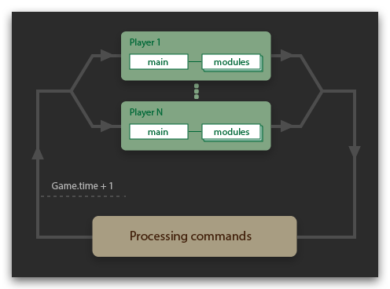

Screeps 是个实时游戏。它游戏时间不等同于现实时间，而是自从开服以来所有 tick 的总和。当下的游戏时间可用(Game.time)获得，这个时间只会随着游戏的发展而增加。
就像其他大部分游戏一样， screeps 是由无穷无尽的 "tick"（循环、回合）拼接而成的。每 tick 内，服务器会轮番处理所有玩家写在 main 里的指令，只有当处理完后才会进入下 tick。
接下来我们来介绍单个 tick 的三个阶段，及初始、执行、结束阶段。

在初始阶段，服务器会重建所有的游戏对象 (object) 和记录这 tick 的游戏状态。比如 creep 的位置，被下令拆除的建筑，或是 creep 及建筑资源的存量 (creep.carry() / StructureExtension.energy() / StructureContainer.store())。
在执行阶段，玩家代码的 main 及它所调用的模块会被执行，但部分改变游戏状态的指令并不会立即执行。如果玩家在同 tick 内先用了 移动 (creep.move()) 再用了 攻击 (creep.attack())，creep 发出攻击的位置将会是移动前的位置，因为 creep 的位置属性 (creep.pos) 只能在初始阶段改变。
在结束阶段，服务器会处理那些改变游戏状态的指令，然后被传达到下 tick 的初始阶段。如果玩家给了相互冲突的指令，像是多个 creep 尝试跑到同一位置，或是边修理边拆除，这些指令会按照优先级执行。但是玩家之间的指令并不一定会造成冲突，比如不同玩家的低血量 creep 相互攻击可能会导致他们同时战死。
更多
玩家代码
main的执行时间被 CPU 所限制(见Game.cpuLimit)已使用 CPU 可由
Game.getUsedCpu获得。- 游戏内 tick 的耗时是由服务器吞吐量决定的。
- 所有运行游戏对象及变量在每 tick 后都会被清除重建(见全局对象)
- 由控制台输入的指令遵循同样的规则：所以控制台输入的指令会在
main之后执行。